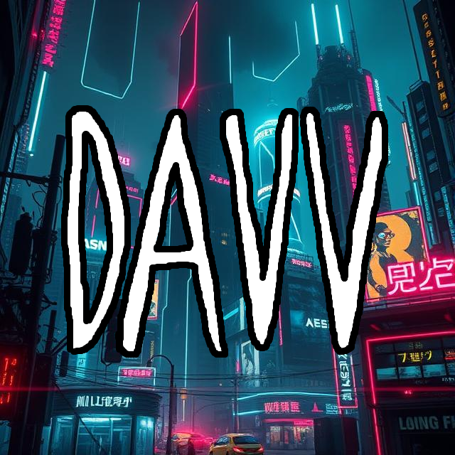

@davdiary
Adventure • Vlogs • Dad Lore
A long‑term storytelling project — adventures, hikes, memories and moments made with the idea that one day my kids will watch these back.
- Adventure vlogs (Dartmoor, Pen y Fan, etc.)
- Natural, documentary‑style storytelling
- Emotion > algorithm

@davvgames
Gaming • Chaos • Comedy
Personality‑driven gaming content focused on funny moments, group dynamics, and cursed situations — skill is optional.
- Co‑op & multiplayer games
- Fast‑paced edits
- Humour over perfection